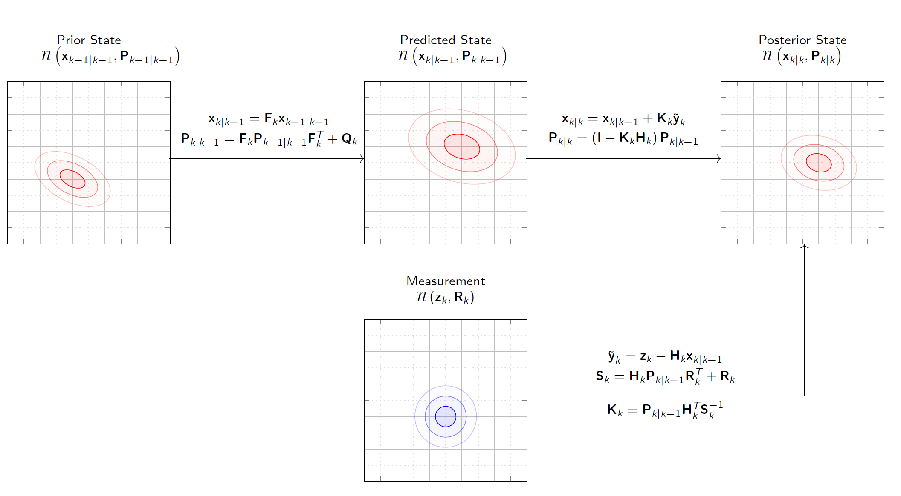

Das Kalman-Filter
Einführung in das Kalman-Filter
Das Kalman-Filter ist ein rekursiver Schätzalgorithmus, der dazu verwendet wird, den Zustand eines dynamischen Systems aus einer Reihe unvollständiger und verrauschter Messdaten zu schätzen. Entwickelt wurde es in den 1960er Jahren von Rudolf E. Kálmán und hat seitdem breite Anwendung in verschiedenen technischen Disziplinen gefunden – von der Signalverarbeitung über die Robotik bis hin zur Navigation.
Im Kern kombiniert das Kalman-Filter ein mathematisches Modell des Systems mit tatsächlichen Messungen, um eine optimierte Schätzung des Systemzustands zu erzeugen. Es basiert auf zwei grundlegenden Phasen: der Vorhersage (Prädiktion) und der Korrektur (Update). In der Vorhersagephase wird der zukünftige Zustand des Systems auf Basis des Modells abgeschätzt. In der Korrekturphase wird diese Vorhersage mithilfe neuer Messdaten aktualisiert, wobei das Vertrauen in Modell und Messung durch Kovarianzmatrizen gesteuert wird.
Dank seiner Fähigkeit, auch bei starkem Messrauschen robuste Schätzungen zu liefern, ist das Kalman-Filter besonders in Anwendungen mit Echtzeitanforderungen und begrenzter Sensorpräzision unverzichtbar geworden.
Annahmen des Kalman-Filters
Damit das Kalman-Filter optimale Ergebnisse liefert, beruht es auf einer Reihe fundamentaler Annahmen über das zugrundeliegende System und die Messungen:
Lineare Modelle Sowohl das Zustandsmodell als auch das Messmodell müssen linear sein. Das bedeutet:
Der Systemzustand entwickelt sich gemäß einer linearen Gleichung weiter:
\[x_k = A x_{k-1} + B u_{k-1} + w_{k-1}\]Die Messung hängt ebenfalls linear vom Zustand ab:
\[z_k = H x_k + v_k\]
Dabei sind \(A\), \(B\) und \(H\) bekannte Matrizen, \(w_k\) das Prozessrauschen und \(v_k\) das Messrauschen.
Normalverteilte Zufallsgrößen Sowohl das Prozessrauschen \(w_k\) als auch das Messrauschen \(v_k\) werden als weißes Rauschen mit Normalverteilung angenommen:
\[w_k \sim \mathcal{N}(0, Q), \quad v_k \sim \mathcal{N}(0, R)\]Diese Annahme stellt sicher, dass auch die geschätzten Zustände normalverteilt sind und das Filter eine geschlossene Form für Mittelwert und Kovarianz liefern kann.
Unkorrelierte Rauschquellen Das Prozess- und das Messrauschen sind voneinander unkorreliert:
\[E[w_k v_j^T] = 0 \quad \text{für alle } k, j\]Diese Unabhängigkeit ist entscheidend dafür, dass sich der Fehlerfortpflanzung sauber voneinander trennen lässt.
Vollständige Kenntnis der Systemparameter Die Modellmatrizen (\(A\), \(B\), \(H\)), sowie die Kovarianzmatrizen des Rauschens (\(Q\), \(R\)) sind bekannt und konstant oder zumindest zeitabhängig aber vorab gegeben.
Diese Voraussetzungen sind in vielen realen Anwendungen nur näherungsweise erfüllt. Dennoch liefert das Kalman-Filter auch bei leicht verletzten Annahmen oft brauchbare Resultate. Für nichtlineare oder nicht-Gaussverteilungen existieren Erweiterungen wie das Extended Kalman Filter (EKF) oder Unscented Kalman Filter (UKF).
Filtergleichungen: Prädiktion und Update
{kind=link}
Das Kalman-Filter operiert in zwei Hauptphasen: Prädiktion (Vorhersage) und Update (Korrektur). In jeder Zeitschrittiteration werden nacheinander diese beiden Schritte ausgeführt, um den Systemzustand möglichst genau zu schätzen.
Prädiktionsschritt
In der Prädiktionsphase wird der nächste Zustand des Systems basierend auf dem aktuellen Schätzwert und dem Modell vorhergesagt.
Zustandsvorhersage:
Fehlerkovarianz-Vorhersage:
Hierbei bezeichnet:
\(\hat{x}_{k|k-1}\) den vorhergesagten Zustand zum Zeitpunkt \(k\) basierend auf Information bis \(k-1\)
\(P_{k|k-1}\) die vorhergesagte Kovarianzmatrix
\(Q\) die Kovarianzmatrix des Prozessrauschens
Updateschritt (Korrektur)
Sobald eine neue Messung \(z_k\) eintrifft, wird die Vorhersage mit dieser Information korrigiert.
Innovation (Messresiduum):
Innovationskovarianz:
Kalman-Gewinn:
Zustandsaktualisierung:
Kovarianzaktualisierung:
Diese rekursive Struktur macht das Kalman-Filter besonders effizient, da es keine historischen Messdaten speichern muss. Stattdessen wird der Zustandsschätzer und die Kovarianzmatrix bei jedem neuen Schritt nur anhand der neuesten Informationen aktualisiert.
Initialisierung des Kalman-Filters
Bevor das Kalman-Filter mit der rekursiven Schätzung beginnen kann, müssen der anfängliche Zustand und seine Unsicherheit spezifiziert werden. Diese Initialisierung spielt eine wichtige Rolle für die Konvergenzgeschwindigkeit und Genauigkeit des Filters in den ersten Zeitschritten.
Zustandsschätzung aus der ersten Messung
In vielen praktischen Anwendungen liegen keine exakten Informationen über den Anfangszustand vor. Eine gängige Methode besteht daher darin, den ersten Messwert \(z_0\) als Startpunkt für die Zustandsschätzung zu verwenden. Dazu wird angenommen, dass der Messwert bereits eine (ggf. verrauschte) Beobachtung des tatsächlichen Zustands ist:
Falls \(H\) nicht invertierbar ist (z. B. bei nicht-vollständiger Beobachtung), kann alternativ eine Annäherung oder Projektion auf den beobachtbaren Raum genutzt werden. In vielen Fällen wird auch direkt gesetzt:
sofern das Messmodell \(H = I\) (Identitätsmatrix) ist, also der Messwert direkt dem Zustand entspricht.
Initiale Kovarianzmatrix
Die anfängliche Unsicherheit über den Zustand wird durch die Kovarianzmatrix \(P_{0|0}\) beschrieben. Diese sollte so gewählt werden, dass sie die Unsicherheit der Startschätzung realistisch widerspiegelt:
Ist der Anfangszustand präzise bekannt, kann \(P_{0|0}\) klein gewählt werden (z. B. \(P_{0|0} = 0\)).
Ist der Anfangszustand unsicher, sollte \(P_{0|0}\) große Werte enthalten (z. B. eine skalierte Einheitsmatrix mit großem Faktor).
Ein typischer Initialwert ist:
wobei \(\sigma^2\) eine heuristisch gewählte Anfangsvarianz ist.
Bemerkung zur Konvergenz
Auch wenn die Initialisierung ungenau ist, konvergiert das Kalman-Filter bei hinreichend informativen Messdaten in der Regel nach einigen Schritten gegen die optimale Schätzung. Dennoch kann eine sinnvolle Initialisierung das Verhalten in der Anfangsphase stark verbessern.
Beispiel: 1-dimensionales Kalman-Filter
Dieses Beispiel zeigt die Funktionsweise des Kalman-Filters in einem einfachen 1D-Szenario, in dem der Zustand die Position eines sich gleichförmig bewegenden Objekts beschreibt. Wir nehmen an:
Der Zustand ist die Position \(x\).
Es gibt keine Kontrolleingabe \(u\).
Das Systemmodell lautet: \(x_k = x_{k-1} + w_k\) mit \(w_k \sim \mathcal{N}(0, Q)\)
Das Messmodell lautet: \(z_k = x_k + v_k\) mit \(v_k \sim \mathcal{N}(0, R)\)
Gegeben:
Anfangsschätzung: \(\hat{x}_{0|0} = 0\)
Anfangskovarianz: \(P_{0|0} = 1.0\)
Prozessrauschen: \(Q = 1.0\)
Messrauschen: \(R = 2.0\)
Messwert bei \(k=1\): \(z_1 = 1.2\)
—
Schritt 1: Prädiktion
—
Schritt 2: Update
Innovation:
Innovationskovarianz:
Kalman-Gewinn:
Zustandsaktualisierung:
Kovarianzaktualisierung:
Ergebnis nach Schritt 1:
Geschätzte Position: \(\hat{x}_{1|1} = 0.6\)
Unsicherheit: \(P_{1|1} = 1.0\)
Anmerkung: Dieses einfache Beispiel zeigt, wie das Kalman-Filter Messwerte mit Modellvorhersagen kombiniert. Die Schätzung liegt zwischen dem Modell (0.0) und der Messung (1.2), gewichtet durch das Vertrauen in beide Quellen. Da Mess- und Modellunsicherheit gleich groß sind, wird der Mittelwert gewählt.
Weitere Iterationen würden nach dem gleichen Schema fortfahren.
Mehrere Messungen zum selben Zeitpunkt
In vielen praktischen Anwendungen stehen mehrere Sensoren zur Verfügung, die zeitgleich Informationen über denselben Systemzustand liefern. Typische Beispiele sind GPS-, Lidar- und Radarsensoren in autonomen Fahrzeugen. Das Kalman-Filter lässt sich auf diese Situation elegant erweitern.
Grundidee
Wenn mehrere Messungen \(z_k^{(1)}, z_k^{(2)}, \dots, z_k^{(n)}\) zum gleichen Zeitpunkt vorliegen, können diese entweder:
Gemeinsam in einem erweiterten Messvektor verarbeitet werden:
\[\begin{split}z_k = \begin{bmatrix} z_k^{(1)} \\ z_k^{(2)} \\ \vdots \\ z_k^{(n)} \end{bmatrix}, \quad H = \begin{bmatrix} H^{(1)} \\ H^{(2)} \\ \vdots \\ H^{(n)} \end{bmatrix}, \quad R = \begin{bmatrix} R^{(1)} & & \\ & \ddots & \\ & & R^{(n)} \end{bmatrix}\end{split}\]Dies führt zu einem einzigen Update-Schritt mit aggregierter Information.
Sequentiell nacheinander verarbeitet werden – mit jeweils eigenem Update:
Nach jeder Messung wird der Zustand aktualisiert.
Der nächste Sensor nutzt den bereits verbesserten Schätzwert als Ausgangspunkt.
Vergleich und Anwendung
Die gemeinsame Verarbeitung (Option 1) ist effizienter und optimal unter der Annahme, dass die Messungen unkorreliert sind.
Die sequentielle Verarbeitung (Option 2) ist flexibler und erlaubt z. B. unterschiedliche Messraten oder unsortierten Eingang.
Beide Methoden liefern bei korrekt spezifizierten Modellen und Rauschkovarianzen identische Resultate, solange die Messfehler unabhängig sind.
Das Meß- und Bewegungsmodell in dieser Aufgabe
Für das Beispiel in diesem Praktikum wird ein einfaches lineares Modell mit konstanter Geschwindigkeit verwendet. Der Systemzustand \(x_k\) ist ein 4-dimensionaler Vektor bestehend aus Position und Geschwindigkeit in 2D:
Dabei sind \(x, y\) die Positionen und \(\dot{x}, \dot{y}\) die jeweiligen Geschwindigkeiten in x- und y-Richtung.
Bewegungsmodell
Das Bewegungsmodell basiert auf konstanter Geschwindigkeit und ist daher linear. Für eine feste Zeitschrittweite \(\Delta t\) ergibt sich die Systemmatrix \(A\):
Die Systemdynamik lautet:
mit \(w_k \sim \mathcal{N}(0, Q)\) als Prozessrauschen.
Messmodell
Die Messungen liefern ausschließlich die Position (nicht die Geschwindigkeit) und sind 2-dimensional:
Das Messmodell ist ebenfalls linear, mit der Beobachtungsmatrix \(H\):
Das Messrauschen \(v_k\) wird vom Sensor bereitgestellt und ist im Allgemeinen zeitabhängig:
Dabei ist \(R_k\) eine 2×2-Kovarianzmatrix, die für jeden Zeitschritt vom Sensor mitgeliefert wird.
Bemerkung: Die Struktur dieses Modells erlaubt eine sehr effiziente Anwendung des Kalman-Filters, da beide Modelle linear sind und die Messungen direkt zur Korrektur der Positionsschätzung beitragen.
Aufgabe 1 - Abhängigkeiten installieren
Installieren Sie zunächst die benötigten Abhängigkeiten, um das Kalman-Filter zu implementieren. Wechseln Sie dazu in das Unterverzeichniss kalman und führen Sie den Befehl
pip install -r requirements.txt
aus. Sie implementieren die folgenden Aufgaben in der Datei
kalman.py
Aufgabe 2 - Das Filter initialisieren
Das Kalman Filter muss zunächst initialisiert werden, bevor es verwendet werden kann.
Implementieren Sie eine nun die Funktion kalman.kalman.init_filter(). Folgen Sie den
Anweisungen im Code sowie dieser Beschreibung.
- KalmanFilter.init_filter(z, R)[Quellcode]
Initializes the Kalman filter with thje first measurement and covariance.
Parameters: - z: The first measurement (2D Vector with position in X and Y). - R: The covariance matrix associated with the measurement, which represents the uncertainty in the measurement.
This method sets the initial state and covariance for the Kalman filter, which will be used in subsequent prediction and update steps.
The state vector self.X is initialized with the first measurement, assuming a 2D position and velocity model. The covariance matrix self.P is initialized with the measurement noise covariance R for position, and larger values for velocity to reflect the uncertainty in the initial state.
Updates:
- self.Xnp.ndarray, shape (4,1)
Predicted state vector after applying the state transition.
- self.Pnp.ndarray, shape (4,4)
Predicted state covariance matrix after accounting for process noise.
Aufgabe 3 - Die Prädiktion
Bevor das Kalman-Filter neue Messungen verarbeiten kann, muss es den nächsten Zustand vorhersagen.
Implementieren Sie eine nun die Funktion kalman.kalman.predict(). Folgen Sie den
Anweisungen im Code sowie dieser Beschreibung.
- KalmanFilter.predict(dt)[Quellcode]
Predicts the next state and covariance of the system using the Kalman filter prediction step. This method applies the state transition model to estimate the next state vector (self.X) and updates the state covariance matrix (self.P) by incorporating process noise. The prediction is based on the following:
State transition matrix (F) models the system dynamics.
Process noise covariance matrix (Q) accounts for uncertainty in the process.
For a 2D position and velocity model, the state vector is represented as: [x_position, y_position, x_velocity, y_velocity]. The state transition matrix F is designed to update the position based on the current velocity, assuming a constant velocity model. The process noise covariance matrix Q is set to a small value to reflect the uncertainty in the process.
Assuming constant velocity, the state transition matrix F is defined as:
\[\begin{split}F = \begin{pmatrix} 1&0&dt&0\\ 0&1&0&dt\\ 0&0&1&0\\ 0&0&0&1 \end{pmatrix}\end{split}\]where dt is the time step between predictions. In this case, we assume dt = 1 for simplicity.
The process noise covariance matrix Q is defined as:
\[\begin{split}F = \begin{pmatrix} q_x&0&0&0\\ 0&q_y&0&0\\ 0&0&q_{vx}&0\\ 0&0&0&q_{vy} \end{pmatrix}\end{split}\]where \(q_x, q_y, q_{vx}\) and \(q_{vy}\) are small values representing the process noise for position.
Use np.diag to create a diagonal matrix for Q, where the diagonal elements represent the process noise variances for each state variable. Use small noise for position and larger noise for velocity to reflect the uncertainty in the process. The prediction step updates the state vector and covariance matrix as follows:
\(X = F \cdot X\): This updates the state vector by applying the state transition matrix F.
\(P = F \cdot P \cdot F^T + Q\): This updates the state covariance matrix by applying the state transition matrix F, its transpose, and adding the process noise covariance matrix Q.
Parameter
- dtfloat
The time step for the prediction, which is typically the time elapsed since the last prediction.
Updates
- self.Xnp.ndarray, shape (4,1)
Predicted state vector after applying the state transition.
- self.Pnp.ndarray, shape (4,4)
Predicted state covariance matrix after accounting for process noise.
Aufgabe 4 - Die Messungen verarbeiten
Nun kann das Kalman-Filter neue Messungen verarbeiten und den Zustand aktualisieren.
Implementieren Sie eine nun die Funktion kalman.kalman.update(). Folgen Sie den
Anweisungen im Code sowie dieser Beschreibung.
- KalmanFilter.update(z, R)[Quellcode]
Performs the Kalman filter update step with the given measurement.
If the filter is not initialized (self.X is None), initializes the filter with the measurement. Otherwise, computes the Kalman gain, updates the state estimate and covariance matrix.
First, one needs to calculate the innovation (measurement residual) y and the innovation covariance S:
\[\begin{split} \begin{array}{ccl} y &=& z - H\cdot X\\ S &=& H \cdot P \cdot H^T + R \end{array}\end{split}\]where \(z\) is the measurement, \(H\) is the measurement matrix, \(X\) is the current state estimate, and \(P\) is the current covariance matrix.
Then, compute the Kalman gain \(K\):
\[K = P \cdot H^T \cdot S^{-1}\]Finally, update the state estimate and covariance matrix:
\[X = X + K \cdot y\]\[P = (I - K \cdot H) \cdot P\]where \(H\) is the measurement matrix and \(I\) is the identity matrix
Parameter:
- znp.ndarray, shape (2,1)
The measurement vector for 2D position (no velocity estimates from the measurement).
- Rnp.ndarray, shape (2,2)
The measurement noise covariance matrix. .
Updates:
- self.Xnp.ndarray, shape (4,1)
The state estimate after incorporating the measurement.
- self.Pnp.ndarray, shape (4,4)
The state covariance matrix after the update.